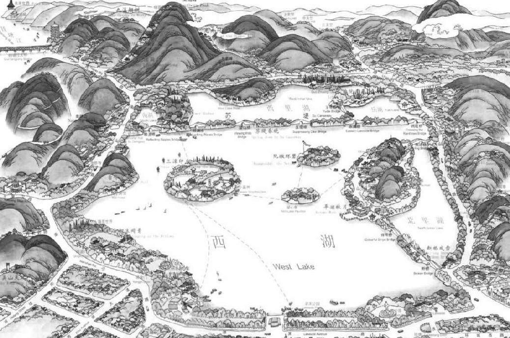

第二十二章 工程与赈灾
一个人在外省为官时总比在京师为官时对国家的贡献大。苏东坡在元祐四年（一〇八九年）七月到达杭州，任浙西军区钤辖兼杭州太守，时年五十二岁。他弟弟子由已经由户部侍郎升任吏部尚书，赐翰林学士。那年冬季，子由以皇帝特使身份出使契丹，往返四个月。
苏东坡则全心全力从事工作。秦观弟弟现在与苏东坡同住，有一年半期间，他没看见苏东坡打开书，他是用太皇太后的恩宠请求特别拨款，进行重要革新方案。在短短的一年半之间，他给全城实现了公共卫生方案，包括一个清洁供水系统和一座医院，他又疏浚了盐道，修建西湖，稳定了谷价，不惜与朝廷及浙西邻省官员意见相左，以“虽千万人吾往矣”的精神，只身展开救济饥馑的工作。
太守的官衙位于杭州中心，但是苏东坡却喜欢在较为富有诗意的地方办公。他往往在葛岭下面有十三间房子的寿星院办公，因为那里风光如画。看公文不在寒碧轩，就在雨奇堂。我们记得雨奇堂是从苏东坡西湖诗“山色空濛雨亦奇”而得名的。在这里，他环以修竹，外望清溪，独自处理公文。
有时，他办公的地方更远，是离杭州城十里或十五里以外的山里。这时，他就吩咐扛着旗伞执事的衙役走钱塘门，他自己则由一两个年老的卫士跟随，从涌金门坐船，过湖面往西，到普安寺用餐。他带几个文书到冷泉亭小坐。他处理公事，其快如风，在谈笑之间便把一天的公事办完了。事情办完，他往往和同僚畅饮一番，在红日西落之前，骑马回家。城里的人站在街道两旁，看这位不同凡响、大名鼎鼎的才子。
在大热的夏天，他总是躲在祥符寺，在好友维贤方丈的屋里睡个午觉。他抛下官帽，丢下官架子，脱下官袍，在躺椅上一伸，让仆人按摩一下两条腿。这时仆人看见他已经用最贱的头绳把头发系在头顶上了。
苏东坡任官之时，做了些怪事。
有一个商人因债务受审，被告是一个年轻人，苏东坡让他说明他的苦况。
被告说：“我家开了一家扇子店。去年家父去世，留下了一些债务。今年春天天阴多雨，人都不买扇子，并不是我赖债不还。”
苏东坡停顿一下，眼睛一亮，计上心来。他一看笔砚在桌子上，忽觉技痒。
他对那年轻人说：“把你的扇子拿一捆来，我替你卖。”
那人回去，转眼拿来二十把素绢团扇。苏东坡拿起桌子上的笔，开始在扇子上写草书，画几棵冬日的枯树，瘦竹岩石。大约一个钟头的工夫，把二十把团扇画完，把扇子交给年轻人说：“拿去还账吧。”
年轻人喜出望外，想不到有这么好运气，向太守老爷千恩万谢，然后抱着扇子跑出了官厅。外边早已传开太守大人画扇子卖。他刚走出衙门，好多人围起他来，争着拿一千个钱买他一把扇子，不几分钟，扇子卖光，来晚一步的只有徒叹奈何了。
有一次，一个由乡间赴京都赶考的书生因有欺诈嫌疑而被捕。那个书生带着两大件行李，上面写着“交京都竹竿巷苏侍郎子由”，下面署名苏东坡，分明是欺诈。苏东坡问他：“行李里头是什么东西？”
书生回答说：“我实在觉得对不起大人。鄙家乡的人送了学生两百匹绸子，算是帮学生的盘费。学生知道这些绸子一路之上要由税吏抽税，等到京都恐怕只剩了一半。学生心想最出名、最慷慨的文人莫过您苏氏二昆仲，所以斗胆用您二位大人的名字。万一被捕，您会体谅下情把学生释放。学生敬求大人恕罪，下次不敢了。”
苏东坡微微一笑，吩咐书记把行李上的旧纸条撕去，亲自写上收信人和寄信人的姓名、地址。并且给子由写了一封短信，交给那个双手颤抖的书生带去。对那个书生说：“老前辈，这次你放心吧。即便差人把你抓到皇上跟前，担保你平安无事。明年考中，别忘了我。”
那个穷老书生不胜惊异，万分感谢。他果然考中。回家时，给东坡这位诗人写了一封信感激深恩大德。苏东坡对这件奇遇非常欢喜，请他在家盘桓了几天。
苏东坡也做了些帮助州学学生的事，老百姓因此越发喜爱他。杭州城有好些要改善的地方。太守官署的房子已经过于陈旧，军人住的营房也漏雨，军火库更是破烂不堪，城门楼上的房顶都露出一片片的天光。有好多一百多年的老房了，都是五代十国时吴越王钱镠时代建筑的。当年中国各地皆纷乱异常，只有吴越朝廷有道，民间太平，几代国王都深得民心。在宋太祖已将中国其他地方全征服，吴越的国王为免生灵涂炭，甘愿献土降服，因此东南百姓，感恩戴德，至死不忘。以前的几任太守曾经自筑官舍，如中和堂、有美堂等新宅第，把旧房子弃置不顾。苏东坡在杭主政时期，曾有一栋坍塌，二人惨遭压毙，另一栋倒塌时，一家四口全死在其中。苏东坡又运用自己与太皇太后的关系，上表请求拨款四万贯修缮官舍、城门、城门楼、谷仓，一共是二十七处。
杭州城有五十万人，却没有一家公立医院。杭州位于钱塘江口，海陆行旅辐臻云集，往往有疫病流行。有些药方历经证明确实有效，他都公布在外。苏东坡在密州为官时，曾经令人把有用的药方用大字抄写贴在市镇广场，作为官方，好使一般百姓知道。有一个特别药方，他深信有效，而且一个大钱一服。那些药方里包括好多味草药，有的是为降烧，有的为出汗，有的为开胃口，有的泻，有的补。中医深信，一个器官有病时，全身亦必有病。所以药方是用以使全身健康，并不只是治某一病的。有一个药方叫“圣散子”，包括二十种药材，其中有高良姜、厚朴、半夏、甘草、草豆蔻、木猪苓、柴胡、藿香、石菖蒲等，还包括麻黄，现在已经证明是胃液分泌的强力兴奋剂。
苏东坡对这些零星无组织的帮助病人的办法颇不满意，他从公款里拨出两千缗，自己捐出五十两黄金，在杭州城中心众安桥，建立了一家公立医院。据我所知，这个“安乐坊”是中国最早的公立医院。三年之内治疗了一千个病人。主办此医院的道士由朝廷酬以紫袍和金钱。后来，此医院迁到西湖边，改名为安济坊，苏东坡离开杭州后，还照常为人治病。
不过苏东坡最关心的是杭州居民的用水问题，还有通过杭州城的运河淤泥。在吴越时代，沿海曾筑有长墙，防止海潮进入运河，免得海盐污染城市内的淡水。但是那道长墙如今年久失修。城内有两道运河，以南北方向穿过城市，直接在闸口连接杭州湾。杭州湾的水相混合，所以有好多淤泥，每四五年，运河河床就需要疏浚一次。当年没有现代的机器，由河床挖出的淤泥就堆在岸边居民住家的门前。运河长十余里，疏浚费用很大，讨居民的厌恶，更不在话下。更坏的是交通情形，一只船要走好几天才能走出城去。船要用人和牛拉，而运河上的混乱不堪，简直难以描画。
苏东坡向专家请教，测量运河的高度，拟好一项计划，以防淤泥沉淀，才能保持运河地区的清洁。这是他在杭州第一次的工程，始于十月，那是他到任后三个月，次年四月竣工。
问题是，那两条运河需要海水才能保持运河上的交通，而海水则带进淤泥。在仔细研究之后，苏东坡确定的是：盐桥河通过市区，必须保持清洁，但海水可设法使之从别处流入茅山运河，因茅山运河是流经人口稀少的城东郊区。另在杭州江南部建水闸，海潮高时将闸关起，潮低时再放水。两条运河在城北相会。等钱塘湾的水经过郊区的运河之后，已经流过了十余里，泥沙当然已沉淀下。盐桥河必须保持清洁，此河面比另外那条运河水面低四尺，所以郊区那条运河的水可以供给城市中的运河一部分水，那水也几乎很干净了。为保持城内运河的水位，他又在城北余杭门外开了一条新河，与西湖相通。这样，水之供给不虞匮乏——疏浚城内盐桥河的花费与麻烦也就可以避免了。
这套办法很有效，他使运河的水深到八尺，城中父老说，那是前所未有的。
和运河交通同样重要的则是供水问题。已经试用过很多方法，想把由山泉汇聚西湖的淡水引入城中。城中有六个水库，分散在各处，但是淡水干线管道常常损坏。十八年前，苏东坡做杭州通判时，曾帮助修理输水管，但是因为西湖有一种水中植物蔓延生长，根在泥中纠缠生长，遂使湖底上升，湖水变浅。输水管既然破坏，居民只得饮用稍有咸味的水，不然就花钱买西湖的水，要一文钱买一桶。苏东坡与当时仍然健在的和尚商量（现在已经七十多岁，当年曾经监督修理那些输水管），输水管是用大竹管子做成，经时不久，苏东坡乃用坚固的胶泥烧成的陶瓦管子代替，上下用石板保护。这个计划需款甚多，因为要建筑三百码长的陶瓦管，由一个水库通到另一个水库。他又把湖水引到城北郊的另两个新水库，以供军营之用，他因身为军事统领，就派一千个兵参加此项工程，结果工做得好，时间也快。据说，那些水库完工之后，杭州城中家家都有西湖的淡水喝。
从六个小水库供给杭州用水的工程成功之后，苏东坡自然进而想整理一个大水库，那就是西湖。在一般人的想象里，苏东坡与今日的西湖是密不可分的。西湖使杭州有“人间天堂”之称，而西湖也是人工创造下美得无以复加的艺术品。虽然人将西湖发展，在四周建设，可是人知道不可超越的界限，知道不要侵犯自然。西湖是人工点缀后的自然，不是人工破坏后的自然。人类真正的智巧所创造出的，并非过度地精巧。一片仙岛，上面的垂柳映入一平如镜的水中，似乎是西湖本来所自有，是自然从湖水中生出的。长堤上的拱桥，往上看有云峰，往下看有渔船，中间一桥如虹，正相配合。柳丝浅绿鹅黄，轻拂半隐半现的石堤，而千年古塔矗立天际，使人想起往日的高僧、往日的诗人。苏堤和西湖之于杭州，正如美女花容月貌上的双眸。我常想，倘若西湖只是空空的一片水——没有苏堤那秀美的修眉和虹彩般的仙岛，以画龙点睛增其神韵，那西湖该望之如何？几百年来，中国的游客春季到来时，向西湖蜂拥而至，度蜜月者，在湖上泛舟垂钓，或在垂杨之下的堤上散步，以消磨时光。有名的西湖十景包括东岸上的“柳浪闻莺”；另一景是在湖上的小岛上，由苏东坡始建的，叫“三潭印月”。的确是，湖的四周没一个角落不使游客觉得美丽出奇而感到荡气回肠的，在晴天也好，在雨中也好。两条长堤横卧湖面，是两个大诗人建筑的：白居易的白堤，苏东坡的苏堤。白堤东西方向，靠近湖的北岸；苏堤约六里长，南北方向，靠近湖的西岸。每个堤都把湖水隔开，靠岸的一边叫里湖，堤上的拱桥下面，小舟可自里湖划到外湖。这两道堤在苏东坡时代，是五十尺宽，栽有垂柳，环以荷花，为杭州人追欢寻乐的广阔散步场所。
杭州的繁荣永远和供水一事有关系。杭州发展为一个城市，实自唐朝始，当时有一位大臣把西湖打开，引水供给城中的居民。在以前，只是一个小镇。苏东坡在湖上动工之前，西湖一直在日渐缩小，湖面葑草丛生，日形繁殖。十八年之前，这些野草遮盖了十分之二三的湖面。他重回杭州之后，看见野草已经将湖面遮盖了一半，既感到意外，又觉得伤心。在唐朝白居易的时代，湖水灌溉了大部分的稻田，落一寸水足可以灌溉十五顷田，每二十四小时，湖可以供水五十顷。白居易的工程而今全已毁坏。
苏东坡刚一结束杭州城的运河系统和六个水库工程，立即着手整理西湖。从工程方面看，只是件简单事，只在清除水草而已。这种改善工程岂不是轻而易举吗？但是以前的主政者都没想到去做。那几个小水库完工之前，苏东坡在元祐五年（一〇九〇年）四月，给太皇太后上了一道表章，简述他疏浚西湖的计划和理由。在五月，他又上书给门下、尚书、中书各省。他说若不急行设法，二十余年之后，湖面将全被野草遮蔽，杭州居民必将失去淡水的来源。他指出五项理由，说明必不可使此种后果出现。说也奇怪，第一个理由竟是个佛教的理由，说鱼类必将因此遭殃；其他理由都指西湖的供水之用，如灌溉稻田、供水给运河，最后是供给好水以便造酒，此与朝廷税收有关。他提出要清理遮蔽湖面的水草二十五万余丈。此项工作需要二十余万的人工，按一天人工清除一丈左右计算，每一工五十五个钱，加上三升米，全部计划需要三万四千贯，他已然筹得一半，请太皇太后再拨给他一万七千贯。
此项计划蒙朝廷批准，苏东坡开始和数千工人、船夫一起活动起来，费时四个月，工程完毕。现在的问题是如何处理堆积如山的水草和淤泥。苏东坡计上心来，用以建筑湖上的长堤。那时湖滨已密密地围起来，全是富户的庭园别墅。由南岸步行到北岸的人必须顺着蜿蜒的湖边走大约二里之遥。一条湖上的直堤，除去可以供人步行外，也可以增加湖面的美丽，且大为缩短往返的距离。此一道堤上有六座拱形的桥、九个亭子。苏东坡在时，其中一个亭子作为他的生祠，里面供有他的画像，以便居民膜拜，纪念他对地方的德政。等势利小人吕惠卿得势之后，他设法弄到一纸朝廷命令，将此纪念亭拆毁。
还有一个问题，就是如何使湖中的恶草不再滋生。苏东坡想到一个办法，就是把沿岸部分开垦出来让农人种菱角。农人必须注意将自己地段按期除草。他向中书省上书，请求确保此项税收，必须应用在湖堤和湖的保养上。
除去增加西湖的实用价值之外，不管是有意也罢，无意也罢，苏东坡也增加了西湖的美。但是这种德政后来也遭致政敌的攻击，说他“虐使捍江厢卒，筑为长堤于湖中，以事游观”。
苏东坡又试验更庞大的计划，要扩展江苏的运河系统；在苏州城外实行拖船驳运计划。还有后来他把在杭州西湖所做的工程也施于阜阳的西湖。这些计划有些没能实现，但是附有地图的详密计划，足以证明他在工程方面的想象力。
我们必须提到他的一项庞大工程计划，不过因为他被召还京未及实现而已。那个详密计划现今依然保存。在钱塘江入杭州湾的江口有一个小岛，那个地方每年船毁人亡，损失惨重。钱塘江势如奔马的洪流正好与流入海湾来的海水相遇，受阻于此一小岛，遂变成了极其危险的旋涡逆流。这个“浮山岛”之得名，就因为四周沙洲时隐时现，而驾船者无从辨认水道何在。这些沙洲有的一二里长，据说一夜的工夫就会完全失踪不见。旅客乘船到杭州，这一段路最为可怕。自浙江东岸来的人，宁愿在龙山横过海湾，但是从西南地区顺钱塘江而下的人则不得不冒险经过。有时可以看见落水的大人儿童哭喊救命，还没来得及抢救，已被洪流巨浪吞没，但是杭州江上的交通还是很重要。贫苦的西南地区人民都以杭州以北湖区产的米为生，而杭州人则依赖西南地区的燃料。盐也产在杭州湾，运销西南地区。虽说水运危险，水运仍极繁忙，但运费高昂，因为水上风险大，运输行船必须付给工人厚礼。这样，使国家遭受无形的损失，为数达到数百万贯之巨。
西湖景观地图 现代
苏东坡两度临杭，熙宁四年（1071年）任杭州通判，元祐四年（1089年）以龙图阁学士出任杭州太守。任职期间，他修井、赈灾、治病、浚湖、开河、引水。东坡肉、苏公堤、“三潭印月”无不表明着苏东坡与杭州，尤其是西湖的渊源。
苏东坡就想在深知钱塘江情形的人协助之下，解决这个问题。新计划是想把通往杭州的船运移到此危险地点上流的一条路。在苏东坡主持之下，拟订了一项计划，需款十五万贯、员工三千，为时两年竣工。在此计划下，要将钱塘江引入一条八里长的新水道，水的深度足可供航运，要筑石堤一条，长二十二里，在山下钻隧道六百五十尺长。不幸这项计划正在拟订中，他必须离开杭州。
同时，他也正在为另一项更迫切的问题忙得要命，那就是饥馑的威胁即将来临。他到任的那一年，就已收成不佳。米价八九月间六十文一斗，到十一月间涨到九十五文一斗。幸而常平仓里还有存粮，他又筹划到二十万石，卖出了十八万石，才算稳住米价，在元祐五年（一〇九〇年）正月，使米价跌到七十五文一斗。在那年春季多雨，看来年成有望。农人借钱施肥勤耕，满希望夏季丰收。在五六月间，杭州和太湖一带大雨滂沱，多日不止，民家积水将及一尺。农人的盼望眼看悉成泡影，随便有点儿常识之人都能看出来，一旦存粮吃光，势将挨饿。苏东坡派人到苏州、常州去视察，接到的报告是该两地全境淹水。水库崩裂，部分稻田被水淹没，农人在划船抢救残存物品。抢救的潮湿稻子还可烧干，稻草用以喂牛，必须设法以济时艰，而且刻不容缓。
虽然不需大才方可预知，苏东坡却在事前早有准备。他一向相信常平仓制度远胜过饥荒之后的救济，所以他早就不断购买谷子存满粮仓，好来应付荒年。因为淫雨连绵不绝，他越为奋战不懈。在半年之内，自七月开始，他给太皇太后和朝廷上表七次，陈述实情，吁请急速设法。前两次表章叫《奏浙西灾伤状》，后面五个叫《相度准备赈济状》，七个表章合成一个情急的呼吁。他呼救不停，直到朝廷人人觉厌烦了。他那种急躁是太背乎中国人的习惯。若干朝廷的特使也在当地，人家一言不发。苏东坡喊叫什么？比平常多下了一点儿雨有什么大惊小怪的？他是为自己挖掘政治上的坟墓吧？
但是他深信一分预防胜过十分救济。在当地买，或是由外地进口，这样不断存粮，以防食粮短缺，并随时卖出以平定粮价，饥荒是可以防止的。把粮食向贫病饥民施舍，永远是浪费无用，只能触到疾苦表面，根本办法则是预防。有远虑的人永远是气躁的。他指出来，在神宗熙宁八年（一〇七五年），没有人事先做何防备，结果大饥荒来临。神宗皇帝需要拨出一百二十五万石食米设立粥厂救济贫民，竟有五十万穷人饿死。除去人受的灾难之外，朝廷救济、减免税款和各项岁收，一共损失了三百二十万贯。苏东坡指出，比照之下，他去年只用了六分之一的粮食就稳住粮价，防止了灾情。现在第二次饥荒会更甚于第一次，就犹如第二次发病会比第一次严重，人民少量的存粮已经逐日减少，必须立即设法。
奇怪的是，除去苏东坡一个人外，别人都是无动于衷。他一看朝廷公报，不觉大怒。好多浙江和邻近的地方官都在春天奏报丰收有望，但无一人陈明新近的暴雨和水灾。苏东坡奏准以修缮官衙的款项购买食米，因为救饥荒第一。六个月以前，他奏请拨给五万贯购买食米，杭州当分得三分之一。朝廷是把钱拨下来，但邻省一个名叶温叟的税吏却把苏东坡应得的款额剥夺了。钱一到，人人都想分润，但是目前却无人肯陈报灾情。苏东坡在一道密奏太皇太后的本章里曾说：“臣近者每观邸报，诸路监司多是于三四月间，先奏雨水匀调，苗稼丰茂。及至灾伤，须待饿殍流亡，然后奏知。此有司之常态，古今之通患也。”他请朝廷下令调查全部灾区。倘若他的担心实属过虑，如果其他官员与他看法不同，要他们签报担保来冬不会有饥荒发生，人民不会挨饿。有一名官员名叫马瑊，苏东坡屡次写信有事与他会商，因为此事须与各地区配合协调。但是此人回信说他正忙于他事，他将因公外出，冬日始可返杭。苏东坡在给他正在浙东为官的一位好友钱勰的一封信里说：“虽子功旦夕到，然此大事，得聚议乃济。数舍之劳，譬如来一看潮，亦自佳事，试告公以此意劝之，勿云仆言也。”在七月的报告中，苏东坡只请求拨米二十万石。那项计划也很简单。杭州本为产米地区，每年只需向京都缴米一百二十五万到一百五十万石，杭州仍然很殷实，能够付得出那个米额的价钱。如蒙允许保存一部分米，杭州可以改缴同值的绸缎银两。他只盼望朝廷准他们留下一部分充作皇粮的米，转到当地谷仓，也就可以了。
同时，在七月二十一、二十二、二十三，另一次狂风暴雨突发。在二十四日，雨少停，但是当夜又倾盆而至。苏东坡无法入睡，次日清晨写了《奏浙西灾伤第二状》。在苏、湖地区，灾情益形严重。太皇太后会对他前一道表章立即批示吗？官差邮政制度还不坏，由杭州到京都，邮递二十天可到。八月初四，太皇太后收到苏东坡的第一道表章，立即办理。照惯例，表章由中书省转到户部，请求在半月之内做一报告。二十天后，在八月二十五，公文到达苏东坡手中。从那份公文里看，他那第一状中催请立即处理的那段最重要部分已遭删除了。他立刻上文户部，请求联合调查，又要求那些认为不致有饥荒出现的人应当签署保证文件。
由八月中旬，另一次暴雨又下个不停，情况比以前更为可怕。在九月初七，苏东坡请拨的米由二十万石提高到五十万石。这些米是预备稳定粮价的。即使朝廷每斗赔十文钱或一石赔一百文钱，朝廷全部的损失也不过五万贯。他恐怕饥荒真正到来，那时朝廷即便花上十倍或二十倍的钱，还不能救那些饥民呢。这番请求蒙太皇太后批准，但是我们可以看到，官僚总会有办法把圣旨变成一张废纸的。苏东坡还有现款在国库，问题不是何处去提款，而是何处去买米。商人都在囤积居奇，待高价而沽。在苏州，米价已经每斗涨到九十五文。苏东坡说要买米，但是买不到多少。他也不过这儿买到三千斗，那儿买到三千斗，如此而已。邻近地区的官员因为价高不愿买米。苏东坡认为官方应当到市场去，付出商人提出的价格，准备赔钱卖出。
时间已嫌不足，再过几十天，新收的稻子也快卖光了。情况还是很坏，甚至邻近各地也是一样。苏东坡在失望之下，在九月后半月又修一道表章，请求朝廷命官员在河南、安徽买米，储存在扬州，以备在饥荒来临时发与湖泊地区的灾民。他的计划是，米要存在途中地方，万一不需要，仍可再运往京都。杭州则可以用同等值的钱货代替每年的贡米。他的所请又蒙批准，太皇太后为此办法拨了一百万贯钱。东坡在此道表章的附奏中说：“今年灾伤，实倍去年。但官吏上下，皆不乐检放，讳言灾伤。只如近日秀州嘉兴县，因不受诉灾伤词状，致踏死四十余人。大率所在官吏，皆同此意，但此一处，以踏死人多，独彰露耳。”太皇太后若信赖官吏的报告，永远不知实情。他提醒太皇太后，前朝曾有五十万人饿死，因为有钱无米。“若来年人户元不阙食，不须如此擘画，则臣不合过当张皇之罪，所不敢辞。纵被诛谴，终贤于有灾无备，坐视人死而不能救也”。
百万拨款的结果是这样：钱是在，但是没有买米。他的五十万石米也被人剥夺了。苏东坡和朝廷算账，官方坚称三十六万石米已经拨下来。苏东坡坚称，在三十六万石之中，元祐四年的二十万石不应当算在元祐五年之内，而且他上表呈请时十六万石已经在官仓之内了。圣旨拨款若干是一件事，能通过官僚的手脚又是一件事。他在对抗官僚的长期作战中，曾写信给好朋友孔平仲说：“谁肯少助我者乎？”
苏东坡的计划是在那年冬天出卖官米。果不出他所料，米价飞涨。冬季一到，他开始出卖官仓存米。但是在元祐六年（一〇九一年）二月，他被调离杭州，又被召至京都充任翰林学士。他离杭州时，所做的事尚未完成，他写信给继任的林太守，请他与所有的有关官员联系，以做决定。他告诉林太守，在前一个月，他曾经请求保留朝廷的五十万石贡米，林太守应当暂时保留此米。林太守以等待前任苏太守最后上朝廷表章的批示为借口，当然可以将解来进京一事安然拖延一段时日。那批米如不急用，到六月再送出，也不算太迟。
苏东坡在赴京途中顺便看看苏州及邻近各地的洪水灾区，以便与各省同僚会商办法。他发现整个地区尚淹没在水中，因为洪水尚未消退。那时正是春天，农人还希望水能及早退去，以便春耕。农田之在低处者，显然无望，在高处的农田里，他看见老翁与女人昼夜忙于往外放水，以人与天气对抗，似乎并无把握。因为雨还在继续下，刚刚淘去些水，不久水又满了。饥荒已然来临，人民开始吃稗糠，平常都是喂猪吃的，现在与芹菜或其他青菜混合煮食。由于缺乏干柴，人民只好生食，好多人因此患肚胀。苏东坡在表章里曾说：“并是臣亲见，即非传闻。春夏之间，流殍疾疫必起。”
苏东坡去了，饥荒来了，人民多病饿而死。真难以令人相信，苏东坡到达京都后，竟遭弹劾，说他夸大灾情，“论浙西灾伤不实”。而救百姓于饥饿竟成为政客打击他们惧怕的敌人，使之失势的题目了。就朝廷而论，京都之内自然没有饥饿问题。湖泊地区也还有半数人民尚未饿死呢。那一年，苏东坡回到京都附近的颍州，就要看到长江以北的难民为饥饿所迫，离乡背井，跋涉五百里，到达他的治下地区，他就要看到那幅饥荒难民图了。但是元祐六年（一〇九一年）五谷歉收的恶果还在后面，次年的饥荒就成了大灾大难。